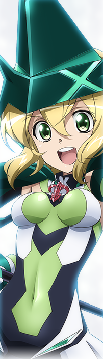
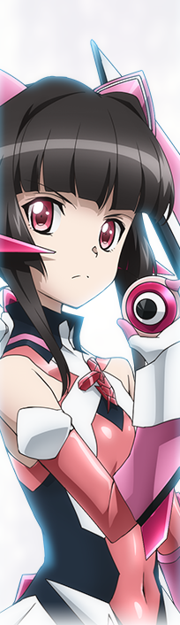

調「リンカー頼りの私達だけど…」
切歌「その絆は時限式じゃないのデス」 (GX11話)
切歌「その絆は時限式じゃないのデス」 (GX11話)
Name
暁 切歌/月詠 調
CV
茅野 愛衣/南條 愛乃
Profile(切歌)
4月13日生まれ。15歳→16歳。O型。身長155cm。体重44kg。3サイズはB81・W56・H83[5]→B82・W56・H83（『GX』時）。シンフォギアシステム「イガリマ」装者である後天的適合者。明るく元気な性格で、「〜デス」が口癖の金髪の少女。「フィーネ」の一員で、常に調と共に行動をしている。元々ウェル博士には、不信感を抱き信用していなかったが、戦い続けるうちにフィーネと思しき力に目覚めるようになり、マリアが嘘を告白したことで自分が「フィーネの器」になったことを確信。いずれフィーネに呑まれて自分が自分でなくなる前に調に何かを残さなければと焦るようになり、ウェル博士のやり方に賛同するという道を選ぶ。しかし、袂を分かった調と相対した際に本当の器が彼女であることを知り、自己嫌悪のあまり自害を図る。それを庇った調と和解し、ネフィリムと戦う響たちと合流し共闘した。
第3期では、調と同様に二課が身元を預かったため、共にリディアンに編入している。
Profile(調)
2月16日生まれ。14歳（『G』エピローグ時点）→15歳（『GX』）。A型。身長152cm。3サイズはB72・W53・H76。シンフォギアシステム「シュルシャガナ」装者である後天的適合者。黒髪ツインテールの物静かな少女。「フィーネ」の一員で、常に切歌と共に行動をしている。響のことを偽善者呼ばわりし、彼女の戦い方に否定的な態度をとる。マリアのことを誰よりも大切に思っていて、いつフィーネ化するのか心配していたが、ウェル博士から真実を聞かされてからは、自分がやってきたことに疑問を持つようになり、フロンティアへの道中に追手の軍艦をノイズで蹂躙するウェル博士に反旗を翻す。フロンティア浮上後は二課に一時拘束されるが、戦力不足の二課と利害が一致し協力関係を結び、響を連れてフロンティア中枢部に向かう。実は彼女こそが真の「フィーネの器」だったが、自殺を図った切歌を庇ってその刃を受けた結果、彼女自身もフィーネの魂に庇われて息を吹き返した。その後響と合流し、彼女の優しさを信じ共闘した。
第3期では、二課が保護観察という名目で身元を預かることになり、切歌と共にリディアンに編入している。
Gear
イガリマ/シュルシャガナ
女神ザババの振るいし碧刃で、メインカラーは黒と緑(3期以降は白と緑)。魔女の帽子のようなヘッドギアと、肩部プロテクターを兼ねた小型ブースターを装着する。アームドギアは鎌で、主に近接戦闘用の打撃兵器。
絶唱はアームドギアが大きく変形し、あらゆる防御を無視して対象の魂を破壊する能力を持つ。
女神ザババの振るいし紅刃で、メインカラーは黒とピンク(3期以降は白とピンク)。アームドギアは円形の鋸で、ツインテール部分に装着されている。ブーツに内蔵された小型の車輪で地面を滑走する。3期以降はツインテールの基部から分離したヨーヨー型の鋸もアームドギアとして使用するようになる。 絶唱はギア全体が大きく変形し、無限軌道による鋸が多数出現する。
女神ザババの振るいし紅刃で、メインカラーは黒とピンク(3期以降は白とピンク)。アームドギアは円形の鋸で、ツインテール部分に装着されている。ブーツに内蔵された小型の車輪で地面を滑走する。3期以降はツインテールの基部から分離したヨーヨー型の鋸もアームドギアとして使用するようになる。 絶唱はギア全体が大きく変形し、無限軌道による鋸が多数出現する。
Song(切歌)
- 獄鎌・イガリマ
- 手紙
- オーバーキルサイズ・ヘル
- おきてがみ
Song(調)
- 鏖鋸・シュルシャガナ
- PRACTICE MODE
- ジェノサイドソウ・ヘヴン
- SENSE OF DISTANCE
